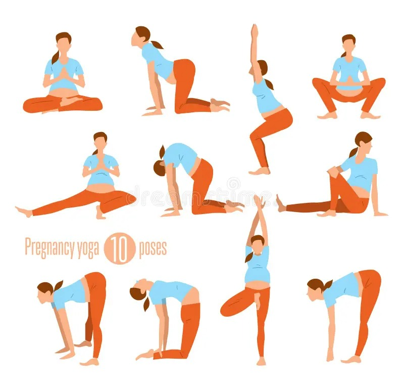

FLEXIBLITY AND STRETCHING

- Neck Stretches: Slowly tilt your head to one side, bringing your ear towards your shoulder. Hold for a few seconds, then switch sides. Gently rotate your neck in a circular motion, first clockwise and then counterclockwise.
- Shoulder Rolls: Sit or stand comfortably with your arms relaxed at your sides. Roll your shoulders forward in a circular motion, then reverse the direction.
- Chest Opener: Stand tall with your feet hip-width apart. Clasp your hands behind your back and gently straighten your arms while lifting your chest.
- Hip Flexor Stretch: Kneel on one knee, with the other foot flat on the floor in front of you. Gently lean forward, keeping your back straight, until you feel a stretch in the front of your hip. Hold, then switch sides.
- Inner Thigh Stretch: Sit on the floor with the soles of your feet together, allowing your knees to fall out to the sides. Hold your feet with your hands and gently press your knees towards the floor.
- Deep Breathing with Stretching: Incorporate deep breathing into each stretch, inhaling deeply as you prepare for the stretch and exhaling as you gently move into it. This helps relax your muscles and increase flexibility
Squats are an excellent exercise for building strength in the lower body, including the quadriceps, hamstrings, glutes, and calves. They also engage the core muscles for stability and balance. During pregnancy, squats can help prepare your body for the physical demands of labor and childbirth. It's important to maintain proper form throughout the movement to avoid strain on the lower back and knees. If you experience discomfort or pelvic pain while performing squats, you can modify the exercise by using a stability ball against a wall for support or reducing the range of motion.